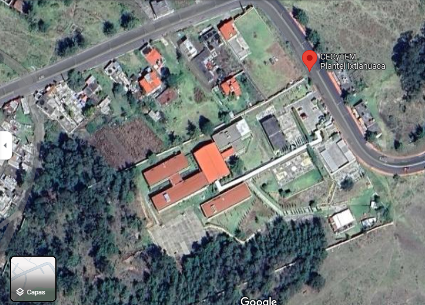

| |||
 |
|||
|
Fecha de Elaboracion: 12 de Abril de 2024. Hora:11:00 a.m. Cruz

|
|||
 Todos los derechos reservados. Elaborado por: José Antonio Cruz Gutiérrez. Tel: 7121171425. E-Mail: celia@gmail.com.mx. Página web: http://www.educacion.mx Domicilio conocido S/N. Prohibido su reproducción total o parcial. Para un óptimo funcionamiento utilizar navegador Google Chrome y resolución de 1024. |
|||